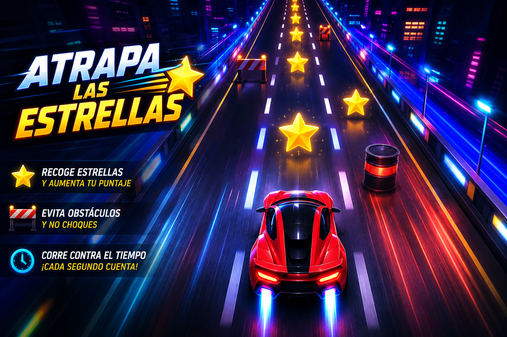
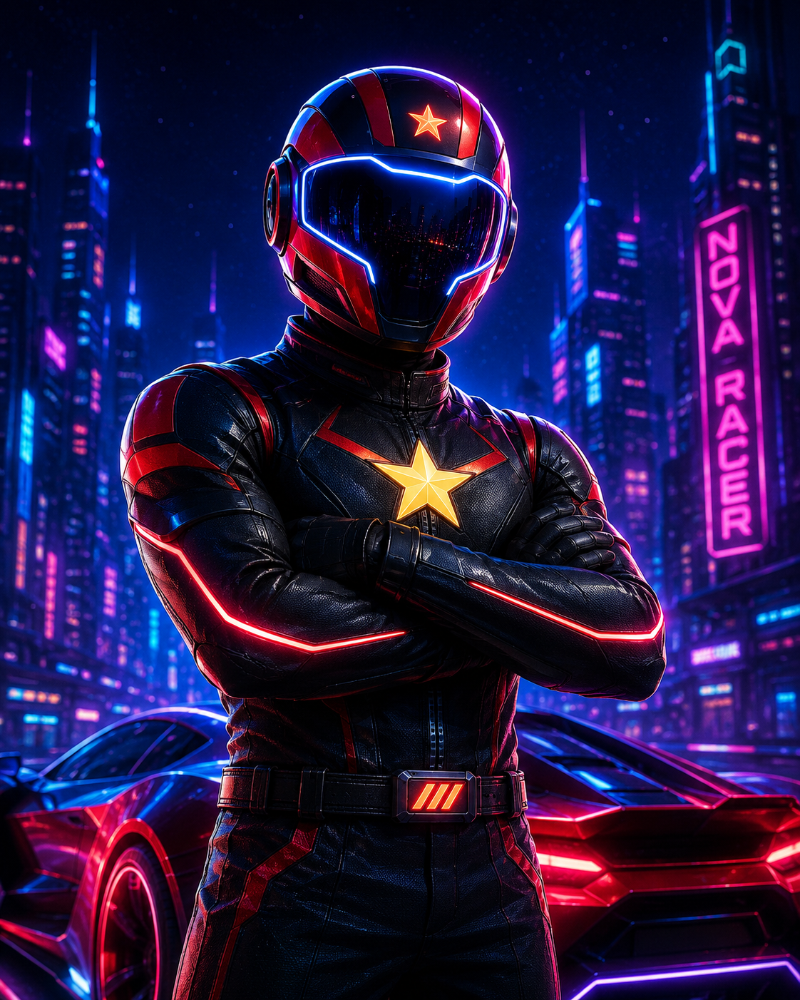
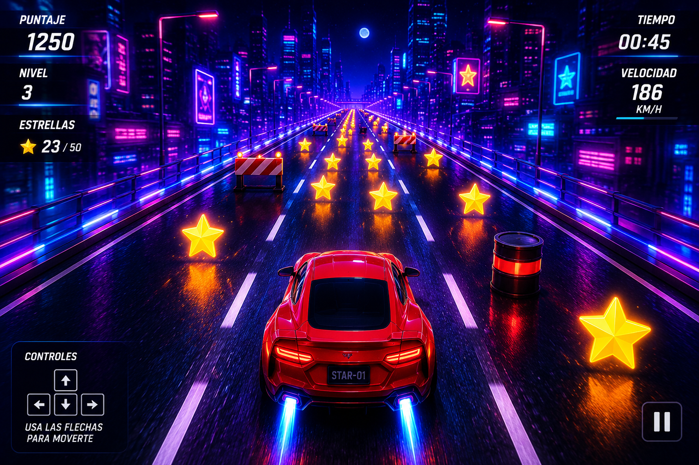
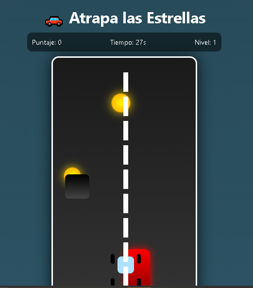
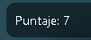
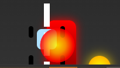

Conduce rápido, evita obstáculos y recoge estrellas antes de que el tiempo termine.
Un videojuego estilo arcade donde el jugador controla un automóvil futurista, esquiva peligros en la carretera y recolecta estrellas de energía para obtener el mayor puntaje posible.

Aprende cómo jugar y descubre las principales mecánicas de Atrapa las Estrellas.
Usa las flechas del teclado para mover el automóvil entre los carriles.
Atrapa estrellas de energía para aumentar tu puntaje y subir de nivel.
Esquiva barreras y obstáculos peligrosos para continuar en la carrera.
El tiempo es limitado, así que debes reaccionar rápidamente para ganar más puntos.
Descubre la historia detrás de Atrapa las Estrellas y conoce el universo futurista donde ocurre la carrera.

Nova Racer es un conductor futurista experto en carreras de alta velocidad. Su misión es recorrer carreteras peligrosas para recolectar estrellas de energía y evitar obstáculos que amenazan el equilibrio de la ciudad.
En una ciudad futurista iluminada por energía estelar, las carreteras principales dependen de estrellas especiales para mantenerse activas. Los jugadores deben conducir a gran velocidad mientras recogen estrellas y sobreviven a los peligros de la autopista.
Cada estrella representa energía vital para la ciudad. Mientras más estrellas se recolecten, mayor será el puntaje y el nivel alcanzado.
Explora algunas escenas y momentos destacados de Atrapa las Estrellas.

El jugador conduce por la autopista mientras recoge estrellas y evita obstáculos.

Vista principal del videojuego con diseño arcade futurista.

Las estrellas recolectadas aumentan el puntaje y permiten subir de nivel.

El juego incluye efectos visuales y explosiones al chocar contra obstáculos.
Conoce el proceso de creación de Atrapa las Estrellas, las tecnologías utilizadas y el desarrollo del videojuego.
Se diseñó una interfaz visual futurista inspirada en videojuegos arcade, utilizando colores neón, tarjetas modernas y navegación intuitiva.
El videojuego fue desarrollado con HTML, CSS y JavaScript, implementando mecánicas de movimiento, puntaje, niveles, temporizador y colisiones.
Se realizaron pruebas funcionales para mejorar la jugabilidad, optimizar los efectos visuales y corregir errores encontrados durante el proceso iterativo.
El proyecto fue preparado para ser publicado en GitHub Pages, permitiendo acceso web al videojuego y su documentación visual.
El desarrollo inició con una versión básica del videojuego. Posteriormente se implementaron mejoras visuales, sistema de niveles, efectos de sonido, pantalla inicial, explosiones, diseño responsivo y secciones informativas para convertir el proyecto en una experiencia más profesional e interactiva.